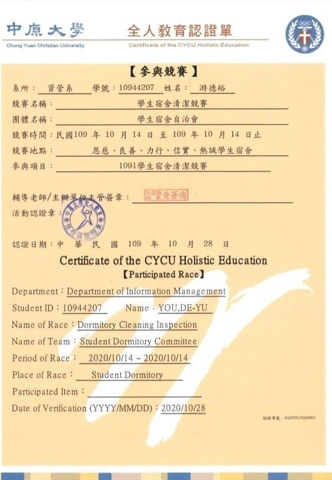

個人經驗
服務學習課程證書:
這一張證書是大一上，系上必修管理學的服務學習課程，從中
我也
能體會到施比受更有福的道理。雖然我是去校內的中原動物服務社去
幫清理狗狗的家，從中，我才發現:其實狗狗們的家需要的工作量真的
很大，也要時時刻刻注意們毛小孩的狀況，相當的辛苦!!!當時光是清
理狗狗們的家園，就花了相當大的時間，真的很敬佩那一些不求回報
卻願意為這一些狗狗們付出的英雄們!!!
Java程式設計程證書:
這一張圖片是我大一下的系上必修課程-Java程式設計表現優異的獎狀，
Java也算是一個很熱門的程式，由於大一上的C#並沒有學好，於是我下
定決心---想要學好一種程式語言，所以我就非常投入課程以及課後勤
勞的練習，使得我慢慢地抓到了撰寫程式的訣竅了，同時的，也慢慢地
發掘到-解決程式問題的樂趣，並且期望未來能有所突破以及發展!!!
大一總成績第一名(書卷獎):
這一張圖片是我大一的時候，把高中的念書習慣帶過來大學，
用心盡力地學習老師所授課的內容，從反覆練習老師課堂上
所示範的範例中，體會出為什麼要這麼安排外，我也會利用
課本後面的習題，自我練習以及訓練一番，所幸努力有所收
穫，讓我得到一個很好的名次，不過也不能因此而自大或自
滿，我必須要謙虛一點，每天都要精進自己的專業能力、不
可懈怠。

力行宿舍清潔競賽:
這一張照片是我大一住在例行宿舍的時候，宿舍內部自己舉辦清潔競賽
的比賽，當時，也有點覺得匪夷所思，為什麼住宿舍還有這活動?我以
為自己要不要乾淨，根本沒有人管你，只要不要礙到室友就可以了，
沒想到，裡頭規矩也還蠻多的，所以我也才知道整理整齊的重要性!!!
雖然，平時搞得很亂也沒有犯法，但是，平時如果有把東西都收好的話，
突然需要使用或是要找什麼東西的話也會比較便利。